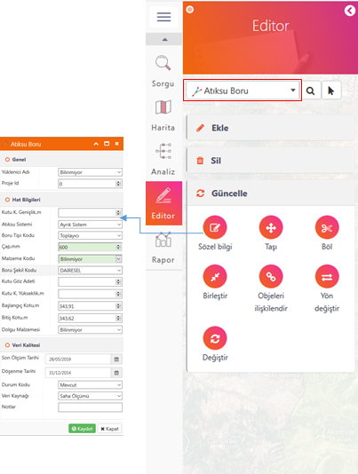

Editör arayüzünde mevcut "akıllı" objeleri düzenleme işlemleri aşağıda görülen standartlaştırılmış komutlarla yapılmaktadır :

1- Sözel (Öznitelik) Bilgi(leri) :
Bu komut mevcut objelerin sözel bilgilerinin değiştirilmesinde kullanılmaktadır. Komut düğmesine basıldıktan sonra çizim ekranından "akıllı" bir obje üzerine tıklanmakta, açılan formda değişiklikler yapıldıktan sonra kaydedilmektedir.
Kullanımı :
Komut düğmesine bastıktan sonra "akıllı" objeye tıklanır. Açılan veri güncelleme formunda gerekli bilgiler değiştirildikten sonra "Güncelle" butonuna basılarak işlem tamamlanmış olur.
2- Taşı :
Objeler bu komut yardımıyla bulunduğu konumdan başka bir konuma taşınabilmektedir.
Kullanımı :
Komut düğmesine bastıktan sonra aktif tabakaya ait bir objeye tıklanır. Yakalanan obje yeni konumuna taşınıp, bırakılır.
3- Döndür:
Nokta geometrisi olan objeler bu komut yardımıyla bulunduğu konumda döndürülebilmektedir. Bu döndürme işleminde asıl amaç sembollerin düzgün açıyla yerleştirilmesidir.
Kullanımı :
Komut düğmesine bastıktan sonra aktif tabakaya ait noktasal bir objeye tıklanır. Yakalanan objenin döndürme işlemi tamamlanır.
4- Geometri Değiştir :
Bu komut "akıllı" bir objenin geometrisinin farklı bir çizim objesinin geometrisi ile yer değiştirilmesi sağlamaktadır. Bu geometri yenileme işlemi sırasında akıllı objenin tüm sözel bilgileri yeni geometriye aynen aktarılmakta, eski geometrik obje ortadan kaldırılmaktadır.
Kullanımı :
1- Aktif tabaka seçilir.
2- Önce değiştirilecek "akıllı obje", sonra hedef obje seçilir.
3- İşlemi tamamlamak için ekranda boş bir alana tıklanır.
5- Birleştir :
Bu komut aynı coğrafi tabakada bulunan birbirine komşu 2 farklı "akıllı" objeyi tek bir geometrik obje haline getirmektedir. Bu işlem sırasında birinci seçilen objenin tüm sözel bilgileri, işlem sonucunda oluşan ana objenin sözel bilgileri olarak atanmaktadır. Dolayısıyla "Birleştir"me işleminde, iki objeden hangisinin özellikleri diğerine aktarılmak isteniyorsa önce o objenin seçilmesi gerekmektedir.
Kullanımı :
Komut düğmesine basıldıktan sonra birbirine komşu olan iki objeden önce ana objeye tıklanır, sonra ikinci objeye ve devamında seçimin kabulü için tekrar ekranda boş bir yere tıklanır ve işlem tamamlanır.
6- Böl :
Bu komut bir "akıllı" objenin belirtilen bir kesme çizgisiyle 2 veya daha fazla sayıda objeye bölünmesi işlemidir. Bölünme işlemi sonrasında herbir obje ana objenin sözel bilgilerini aynen almaktadır.
Kullanımı :
Komut düğmesine basıldıktan sonra önce bölünmek istenen "akıllı" objeye, ikinci olarak kesen objeye tıklanır, devamında seçimin kabulü için ekranda boş bir yere tıklanır ve bölme işlemi tamamlanır.
7- Objeleri ilişkilendir :
Bu komut "akıllı" bir objenin ana(domain) objeyle ilişkilendirilmesinde kullanılmaktadır. Örnek olarak, içmesuyu sisteminde aralarında domain(ana-çocuk obje) ilişkisi bulunan boru ve donatı elemanları birbiri ile bu komut vasıtasıyla ilişkili hale getirilmektedir.
8- Yön Değiştir :
Bu komut çizgisel özellik taşıyan tabakalarda akış yönünü tersine çevirmektedir. Özellikle yol ve altyapı hatlarında çokça kullanılan bir fonksiyondur.